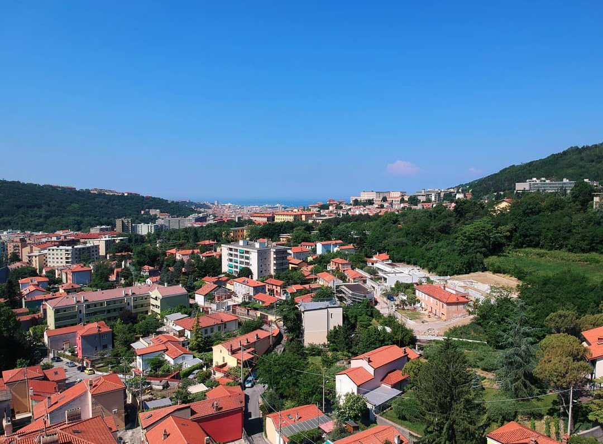
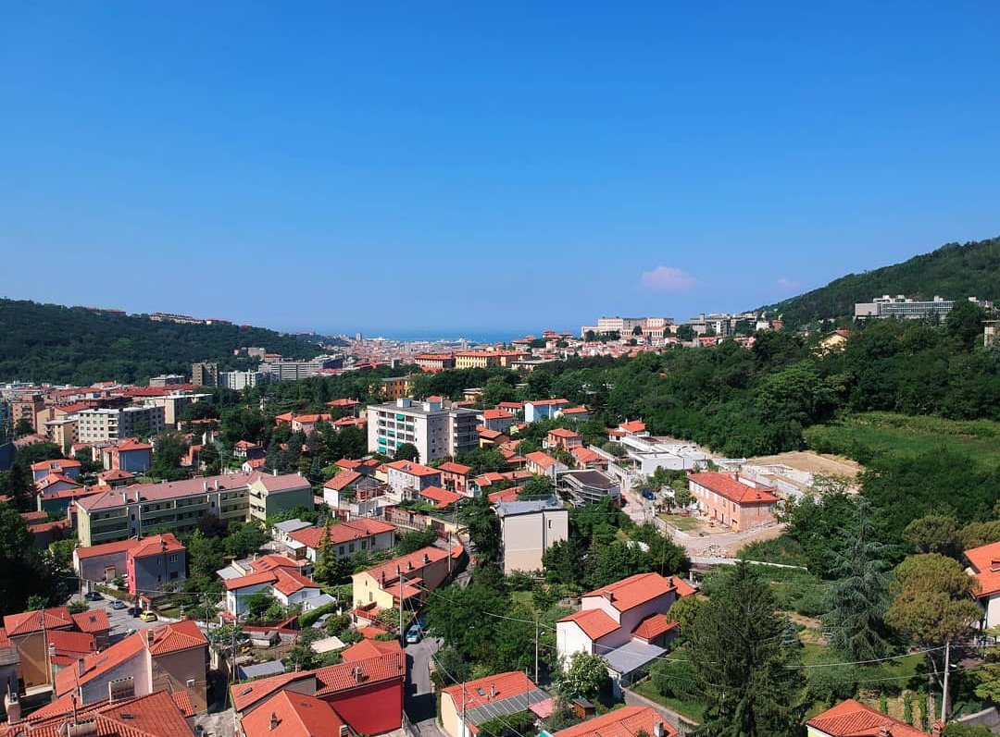

About me

Since then, I have taken several online classes as well as classes at the University of Miami, in order to improve my skills!
My drone
I own a DJI Mavic Air, with the following specs:
Sensor 1/2.3” CMOS
Effective Pixels: 12 MP
Lens FOV: 85°
Aperture: f/2.8
Electronic Shutter: 8 - 1/8000s
Still Image Size:
4:3: 4056×3040
16:9: 4056×2280
Takeoff Weight 430 g
Dimensions Folded:
168×83×49 mm (L×W×H)
Unfolded:
168×184×64 mm (L×W×H)
Max Speed (no wind): 68.4 kph
Max Service Ceiling Above Sea Level 5000 m
Max Flight Time (no wind): 21 minutes
Gallery

 

Miscellaneous
Adobe Lightroom CC
Adobe Photoshop CC
University of Miami, FL
Downtown Miami, FL
Trieste, Italy
PolarPRO ND16 lens filter
Newegg ND32/ND64 lens filter